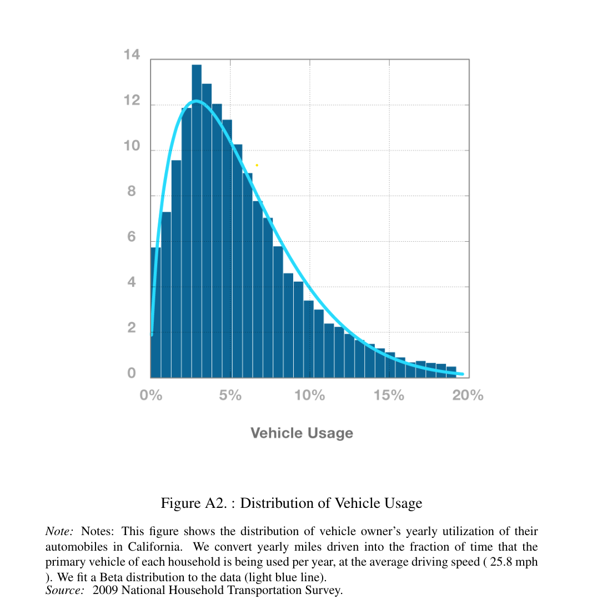
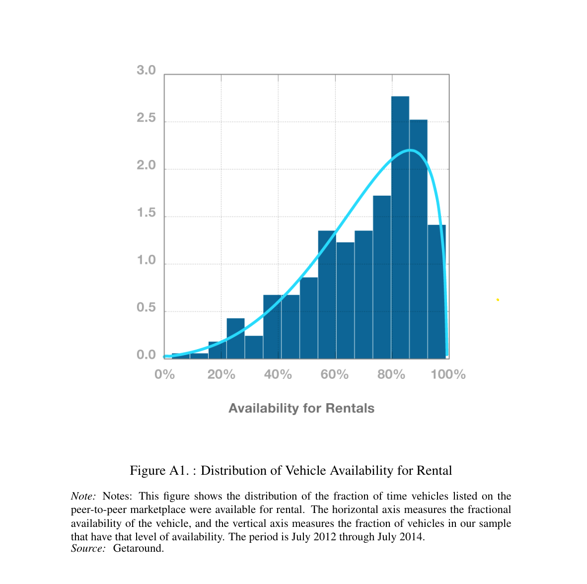

Intro
In an era where convenience and sustainability are paramount, the concept of carsharing has emerged as a transformative solution to urban mobility challenges. Kimo is a peer-to-peer carsharing platform designed to revolutionize the way individuals access transportation. By connecting vehicle owners with individuals in need of short-term transportation, Kimo offers a convenient, cost-effective, and sustainable alternative to traditional car ownership and rental services.
A case for the sharing Economy
The sharing economy is a system where individuals share resources, goods, and services, often facilitated by online platforms. This model allows for the efficient use of assets like cars and accommodation. Examples include companies like Airbnb for accommodation sharing and Uber for ride-sharing. The sharing economy promotes resource efficiency, cost savings, and community interaction.
The sharing economy addresses the issue of underutilization of certain products. For instance, cars typically remain unused for the majority of the time, as illustrated by the Distribution of Vehicle Usage graph.
One of the primary challenges people encounter when attempting to rent a vehicle is the availability of cars. Data from the carsharing company Getaround indicates that the sharing or peer-to-peer model offers significantly high availability rates, as depicted in the graph below.
Already Existing Services
There already exists a number of services that offer carsharing services. Most notably:
- Communauto: One of the oldest carsharing services in Montreal, offering a mix of company-owned and member-owned vehicles.
- Turo: A peer-to-peer carsharing platform that allows individuals to rent out their vehicles to others, providing a wide range of options for renters. (This will be more or less what we’re going for with Kimo)
- Getaround: Another major player in the peer-to-peer carsharing space, providing users with access to a variety of vehicles on a short-term basis.
Why build another peer-to-peer car sharing app?
The motivation behind developing a carsharing app stems from the specific market I intend to target, namely my home country of Morocco. Put simply, there is currently no peer-to-peer carsharing service available in Morocco, and I believe that people would greatly benefit from it for several reasons. Morocco is a popular tourist destination, attracting over 14.5 million visitors in 2023. A significant portion of these visitors opt to rent cars, leading to frequent shortages in rental cars. Additionally, the current car rental market in Morocco generated 5.84 billion Dirhams in 2023, indicating a substantial demand for car rental services. This gap in the market presents a unique opportunity to introduce a peer-to-peer carsharing service, especially considering the rising popularity of the sharing economy globally.
Requirements
Now that we have a solid economic incentive to build the app, let’s take a look at the requirements for building such an app.
Functional Specifications:
- Search Functionality: Enable users to search for vehicles based on type, location, availability, ratings, and reviews.
- Booking System: Allow guests to book vehicles directly on the platform.
- Messaging: Provide a messaging system for users to communicate with hosts.
- Check-in and Check-out: Offer features for users to check in and out of their trips.
- Rating System: Include a rating system for users to rate their experience with the vehicle and host.
- Payment System: Use a robust payment system for users to securely pay for their bookings.
- ID Verification System: Verify the identity of users and hosts through an ID verification system.
- Photo Taking: Take photos before and after using a car to check for damage.
Non-Functional Specifications:
- Usability: Provide an intuitive user interface with clear navigation and instructions.
- Scalability: Design the architecture to easily scale to accommodate a growing user base and increasing traffic.
- Compatibility: Ensure the app is compatible with both Android and iOS platforms.